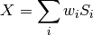
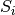
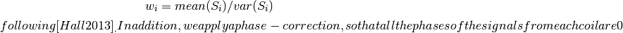

analysis¶
MRS.analysis¶
Analysis functions for analysis of MRS data. These include a variety of functions that can be called independently, or through the interface provided in MRS.api.
bootstrap_stat¶
- MRS.analysis.bootstrap_stat(arr, stat=<function mean at 0x1050a47d0>, n_iters=1000, alpha=0.05)¶
Produce a boot-strap distribution of the mean of an array on axis 0
- arr : ndarray
- The array with data to be bootstrapped
- stat : callable
- The statistical function to call. will be called as stat(arr, 0), so needs to accept that call signature.
- n_iters : int
- The number of bootstrap iterations to sample
- alpha : float
- The confidence interval size will be 1-alpha
coil_combine¶
- MRS.analysis.coil_combine(data, w_idx=[1, 2, 3], coil_dim=2, sampling_rate=5000.0)¶
Combine data across coils based on the amplitude of the water peak, according to:

Where X is the resulting combined signal,  are the individual coil signals and
 are calculated as:
are calculated as:
Parameters: data : float array
The data as it comes from the scanner (read using the functions in files.py), with shape (transients, echos, coils, time points)
- w_idx : list
- The indices to the non-water-suppressed transients. Per default we take
the 2nd-4th transients. We dump the first one, because it seems to be quite different than the rest of them...
- coil_dim : int
The dimension on which the coils are represented. Default: 2
- sampling rate : float
The sampling rate in Hz. Default : 5000.
fit_gaussian¶
- MRS.analysis.fit_gaussian(spectra, f_ppm, lb=2.6, ub=3.6)¶
Fit a gaussian function to the difference spectra to be used for estimation of the GABA peak.
Parameters: spectra : array of shape (n_transients, n_points)
Typically the difference of the on/off spectra in each transient.
f_ppm : array
lb, ub : floats
In ppm, the range over which optimization is bounded
fit_lorentzian¶
- MRS.analysis.fit_lorentzian(spectra, f_ppm, lb=2.6, ub=3.6)¶
Fit a lorentzian function to spectra
This is used in estimation of the water peak and for estimation of the NAA peak.
Parameters: spectra : array of shape (n_transients, n_points)
Typically the sum of the on/off spectra in each transient.
f_ppm : array
lb, ub: floats :
In ppm, the range over which optimization is bounded
fit_two_gaussian¶
- MRS.analysis.fit_two_gaussian(spectra, f_ppm, lb=3.6, ub=3.9)¶
Fit a gaussian function to the difference spectra
This is useful for estimation of the Glx peak, which tends to have two peaks.
Parameters: spectra : array of shape (n_transients, n_points)
Typically the difference of the on/off spectra in each transient.
f_ppm : array
lb, ub : floats
In ppm, the range over which optimization is bounded
fit_two_lorentzian¶
- MRS.analysis.fit_two_lorentzian(spectra, f_ppm, lb=2.6, ub=3.6)¶
Fit a lorentzian function to the sum spectra to be used for estimation of the creatine and choline peaks.
Parameters: spectra : array of shape (n_transients, n_points)
Typically the sum of the on/off spectra in each transient.
f_ppm : array
lb, ub : floats
In ppm, the range over which optimization is bounded
get_spectra¶
- MRS.analysis.get_spectra(data, filt_method={'filt_order': 256, 'lb': 0.1}, spect_method={'BW': 2, 'NFFT': 1024, 'n_overlap': 1023}, phase_zero=None, line_broadening=None, zerofill=None)¶
Derive the spectra from MRS data
Parameters: data : nitime TimeSeries class instance or array
Time-series object with data of shape (echos, transients, time-points), containing the FID data. If an array is provided, we will assume that a sampling rate of 5000.0 Hz was used
filt_method : dict
Details for the filtering method. A FIR zero phase-delay method is used with parameters set according to these parameters
spect_method : dict
Details for the spectral analysis. Per default, we use
line_broadening : float
Linewidth for apodization (in Hz).
zerofill : int
Number of bins to zero fill with.
Returns: f : :
the center frequency of the frequencies represented in the
spectra
- spectrum_water, spectrum_water_suppressed:
The first spectrum is for the data with water not suppressed and the second spectrum is for the water-suppressed data.
Notes
This function performs the following operations:
- Filtering.
2. Apodizing/windowing. Optionally, this is done with line-broadening (see page 92 of Keeler2005. 3. Spectral analysis.
[Keeler2005] Keeler, J (2005). Understanding NMR spectroscopy, second edition. Wiley (West Sussex, UK).
integrate¶
- MRS.analysis.integrate(func, x, args=(), offset=0, drift=0)¶
Integrate a function over the domain x
Parameters: func : callable
A function from the domain x to floats. The first input to this function has to be x, an array with values to evaluate for, running in monotonic order
x : float array
The domain over which to integrate, as sampled. This can be monotonically decreasing or monotonically increasing.
args : tuple
The parameters of func after x.
offset : :
Notes
We apply the trapezoid rule for integration here, using scipy.integrate.trapz.
scalemodel¶
- MRS.analysis.scalemodel(model, scalefac)¶
Given a scale factor, multiply by model to get scaled model
Parameters: model : array
original model
scalefac : array of model.shape[0]
array of scalefactors
Returns: scaledmodel : array
model scaled by scale factor
separate_signals¶
- MRS.analysis.separate_signals(data, w_idx=[1, 2, 3])¶
Separate the water and non-water data from each other
Parameters: data : nd array
FID signal with shape (transients, echos, coils, time-points)
w_idx : list (optional)
Indices into the ‘transients’ (0th) dimension of the data for the signal that is not water-suppressed
Returns: water_data, w_supp_data : tuple
The first element is an array with the transients in the data in which no water suppression was applied. The second element is an array with the transients in which water suppression was applied
simple_auc¶
- MRS.analysis.simple_auc(spectrum, f_ppm, center=3.0, bandwidth=0.3)¶
Calculates area under the curve (no fitting)
Parameters: spectrum : array of shape (n_transients, n_points)
Typically the difference of the on/off spectra in each transient.
center, bandwidth : float
Determine the limits for the part of the spectrum for which we want to calculate the AUC. e.g. if center = 3.0, bandwidth = 0.3, lower and upper bounds will be 2.85 and 3.15 respectively (center +/- bandwidth/2).
Notes
- Default center and bandwidth are 3.0 and 0.3ppm respectively
- because of Sanacora 1999 pg 1045:
“The GABA signal was integrated over a 0.30-ppm bandwidth at 3.00ppm”
Ref: Sanacora, G., Mason, G. F., Rothman, D. L., Behar, K. L., Hyder, F., Petroff, O. A., ... & Krystal, J. H. (1999). Reduced cortical {gamma}-aminobutyric acid levels in depressed patients determined by proton magnetic resonance spectroscopy. Archives of general psychiatry, 56(11), 1043.
simps¶
- MRS.analysis.simps(y, x=None, dx=1, axis=-1, even='avg')¶
Integrate y(x) using samples along the given axis and the composite Simpson’s rule. If x is None, spacing of dx is assumed.
If there are an even number of samples, N, then there are an odd number of intervals (N-1), but Simpson’s rule requires an even number of intervals. The parameter ‘even’ controls how this is handled.
Parameters: y : array_like
Array to be integrated.
x : array_like, optional
If given, the points at which y is sampled.
dx : int, optional
Spacing of integration points along axis of y. Only used when x is None. Default is 1.
axis : int, optional
Axis along which to integrate. Default is the last axis.
even : {‘avg’, ‘first’, ‘str’}, optional
- ‘avg’ : Average two results:1) use the first N-2 intervals with
a trapezoidal rule on the last interval and 2) use the last N-2 intervals with a trapezoidal rule on the first interval.
- ‘first’ : Use Simpson’s rule for the first N-2 intervals with
a trapezoidal rule on the last interval.
- ‘last’ : Use Simpson’s rule for the last N-2 intervals with a
trapezoidal rule on the first interval.
See also
- quad
- adaptive quadrature using QUADPACK
- romberg
- adaptive Romberg quadrature
- quadrature
- adaptive Gaussian quadrature
- fixed_quad
- fixed-order Gaussian quadrature
- dblquad
- double integrals
- tplquad
- triple integrals
- romb
- integrators for sampled data
- cumtrapz
- cumulative integration for sampled data
- ode
- ODE integrators
- odeint
- ODE integrators
Notes
For an odd number of samples that are equally spaced the result is exact if the function is a polynomial of order 3 or less. If the samples are not equally spaced, then the result is exact only if the function is a polynomial of order 2 or less.
subtract_water¶
- MRS.analysis.subtract_water(w_sig, w_supp_sig)¶
Subtract the residual water signal from the Normalize the water-suppressed signal by the signal that is not water-suppressed, to get rid of the residual water peak.
Parameters: w_sig : array with shape (n_reps, n_echos, n_points)
A signal with water unsupressed
w_supp_sig :array with shape (n_reps, n_echos, n_points) :
A signal with water suppressed.
Returns: The water suppressed signal with the additional subtraction of a scaled :
version of the signal that is presumably just due to water. :
trapz¶
- MRS.analysis.trapz(y, x=None, dx=1.0, axis=-1)¶
Integrate along the given axis using the composite trapezoidal rule.
Integrate y (x) along given axis.
Parameters: y : array_like
Input array to integrate.
x : array_like, optional
If x is None, then spacing between all y elements is dx.
dx : scalar, optional
If x is None, spacing given by dx is assumed. Default is 1.
axis : int, optional
Specify the axis.
Returns: trapz : float
Definite integral as approximated by trapezoidal rule.
See also
sum, cumsum
Notes
Image [R2] illustrates trapezoidal rule – y-axis locations of points will be taken from y array, by default x-axis distances between points will be 1.0, alternatively they can be provided with x array or with dx scalar. Return value will be equal to combined area under the red lines.
References
[R1] Wikipedia page: http://en.wikipedia.org/wiki/Trapezoidal_rule [R2] (1, 2) Illustration image: http://en.wikipedia.org/wiki/File:Composite_trapezoidal_rule_illustration.png Examples
>>> np.trapz([1,2,3]) 4.0 >>> np.trapz([1,2,3], x=[4,6,8]) 8.0 >>> np.trapz([1,2,3], dx=2) 8.0 >>> a = np.arange(6).reshape(2, 3) >>> a array([[0, 1, 2], [3, 4, 5]]) >>> np.trapz(a, axis=0) array([ 1.5, 2.5, 3.5]) >>> np.trapz(a, axis=1) array([ 2., 8.])
{kind=link}